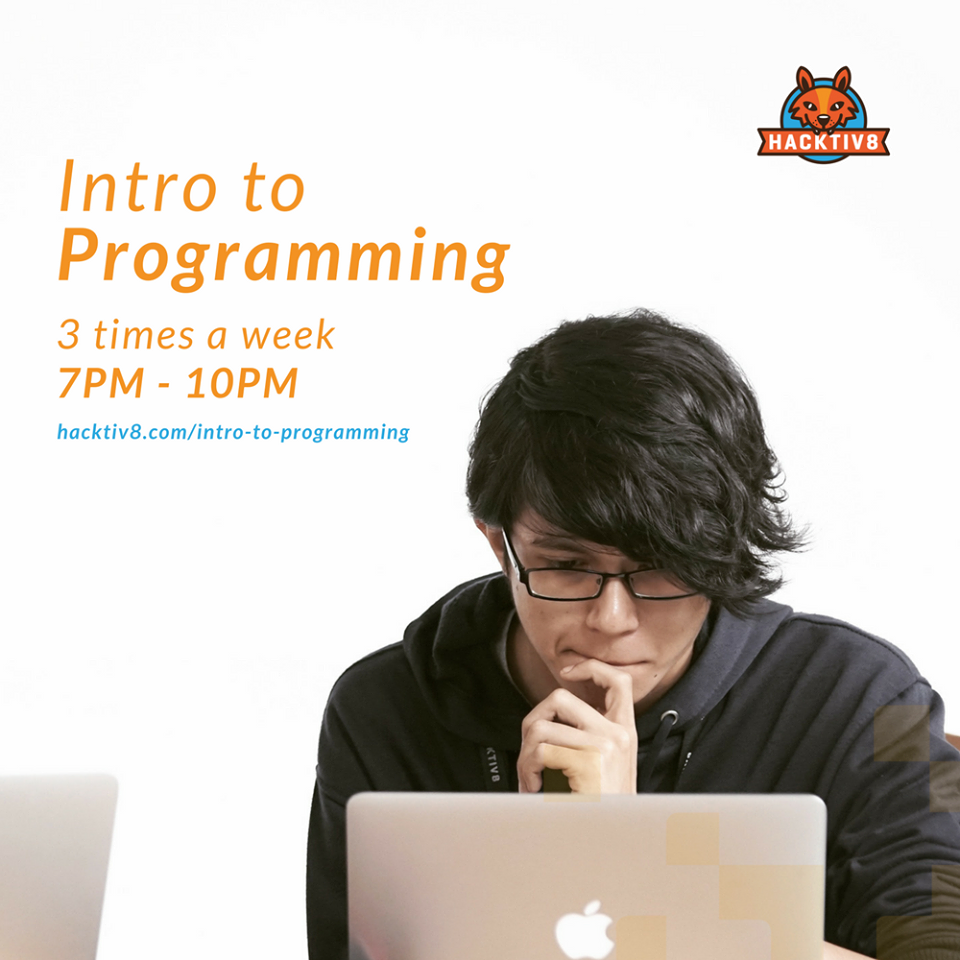

29 Juli 2019
Final Project Intro To Programming Hacktiv8
Bekerja dari apa yang dicintai adalah hal yang didambakan oleh semua orang, namun tidak memang tidak mudah untuk memulainya. Begitu juga dengan saya, yang notabene seorang lulusan dari bidang ilmu politik, mencoba mencari arah lain demi masa depan yang lebih cerah. Saya memutuskan untuk memilih bidang lain yang benar-benar saya cintai. Pilihan saya jatuh pada coding. Sebenarnya bisa dikatakan coding atau apa pun yang berkaitan dengan IT dan teknologi bukanlah hal baru bagi saya. Karena, setiap hari saya berkutat dengan kedua hal tersebut, baik dalam hal bermain game, bermain media sosial, dan sekalipun hanya dengan duduk di depan layar komputer. Keseharian itu membuat saya berpikir agar bagaimana dengan rutinitas keseharian saya itu dapat bermanfaat bagi saya dan masa depan saya. Saya menceritakan hal tersebut kepada teman hidup saya dan respon pertama dia adalah menyarankan untuk mencoba ikut kelas pendek kursus komputer, dan nama pertama yang muncul dari ucapan dia adalah Hacktiv8. Saat itu untuk pertama kalinya saya mendengar kata Hacktiv8 dan ucapan dia menggerakkan semangat saya untuk mencari tahu apa itu Hacktiv8 dan program apa saja yang dimiliki. Tidak perlu pikir lama saya memutuskan untuk mengikuti salah satu program dari Hacktiv8 yakni “Intro to Programming”.

Di program tersebut kita diajarkan pemahaman dasar tentang dunia pemrograman dan seluruh dasar logika sebagai developer. Kita juga diajarkan beragam perangkat-perangkat lunak yang biasanya digunakan dalam bidang pemrograman. Awalnya kita diberi pelajaran tentang HTML sebagai bahasa dasar pemrograman. Kemudian kita diajari bagaimana mempercantik tampilan muka dari HTML dengan menggunakan CSS. Di tahapan akhir kita akan diajari tentang bagaimana penggunaan Javascript sebagai sistem utama dari sebuah aplikasi. Proses pembelajarannya selama 12 Minggu dengan 3 kali dalam seminggu untuk pertemuan. Di akhir masa pembelajaran kita dituntut untuk dapat membuat aplikasi sebagai bentuk “Final Project”, dan kebetulan saat itu saya membuat aplikasi permainan di website dengan jugal “Kebut-kebutan”.

Pada dasarnya permainan ini menggunakan prinsip dasar “siapa yang cepat menekan tombolnya, dia yang menang”. Terdengan cukup sederhana namun cukup seru untuk dimainkan. Untuk memainkannya cukup menekan tombol keyboard arah kiri untuk mobil pertama, dan tombol keyboard arah kanan untuk mobil kedua. Siapa yang menyentuh garis finish untuk pertama kali, dialah yang memenangkan permainan. Cukup sederhana bukan? Penasaran dengan permainannya, langsung saja kunjungi websitenya disini.
Dalam program tersebut saya juga mendapatkan banyak pengalaman dan rekan baru tentunya membuat hari-hari pembelajaran semakin menyenangkan. Dengan memulai langkah awal yang kecil ini saya berharap dapat mengejar apa yang saya cintai dengan mewujudkannya sebagai masa depan yang cerah bagi kehidupan saya kedepannya.